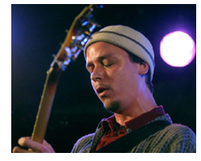

 Kurt Rosenwinkel is an American jazz guitarist who came to prominence in the 1990s. He is known for his distinct sound and style of improvisation that is influenced by artists as diverse as Allan Holdsworth, George Van Eps, Duke Ellington, John Coltrane, Bud Powell, Elmo Hope and The Notorious B.I.G. He attended the Berklee School of Music for two and a half years before leaving in his junior year to tour with Gary Burton, the dean of the school at the time. Subsequently, he moved to Brooklyn where he continued to develop his jazz guitar skills by performing with Human Feel, Paul Motian's Electric Bebop Band, Joe Henderson Group, and the Brian Blade Fellowship. During that time he began using a Lavalier lapel microphone fed into his guitar amplifier [2] that blends his vocalizing with his guitar and has become a trademark of his sound both live and in the studio.
In 1995 he won the Composer's Award from the National Endowment for the Arts and was eventually signed by Verve Records. Since then he has played and recorded as both a leader and sideman with fellow-alumni such as Mark Turner and Brad Mehldau as well as many others. During his tenure with Verve he collaborated with Q-Tip of A Tribe Called Quest who co-produced his studio album Heartcore (2003) which featured bassist Ben Street, drummer Jeff Ballard and saxophonist Mark Turner and was a departure from the usual compositional process for Rosenwinkel, blending elements of jazz, rock, hip hop and electronica. He would further collaborate with Q-Tip performing guitar on the latter's albums The Renaissance (2008) and Kamaal/The Abstract (2009).
Rosenwinkel has since released a double live album as a band leader. The album is entitled The Remedy - Live at the Village Vanguard (2008) and features Mark Turner, Aaron Goldberg, Joe Martin and Eric Harland. His latest studio album Standards Trio: Reflections (2009) was released on November 10, 2009 and features Eric Revis on bass and Eric Harland on drums. On September 7, 2010 he will release his ninth album as a leader entitled "Kurt Rosenwinkel & OJM: Our Secret World" (2010) and features OJM an 18 piece big band from Porto, Portugal.
Kurt simultaneously utilizes a wide variety of effects units, each with a very specific function and effect on the guitar's sound. Included in his pedal chain is the Pro Co RAT distortion, TC Electronic reverb, Lehle D. Loop effect-loop/switcher, Electro-Harmonix HOG polyphonic guitar synthesizer, two Empress ParaEq equalizers, Eventide TimeFactor delay, four Xotic X-Blender effects loops, Empress Tremolo, Lehle Parallel line mixer, TC Electronic SCF stereo chorus flanger, and Boss Corporation OC-3 octave, among others. Most often seen playing his D'Angelico New Yorker semi-hollow guitar, Kurt also plays a Sadowsky semi-hollow, a cherry red Gibson ES-335, and more recently two custom guitars made for Kurt by Italian guitar maker and master luthier Domenico Moffa.
Originally from Philadelphia, Kurt Rosenwinkel currently resides in Berlin, Germany raising his two sons Silas and Ezra and serving as professor of jazz guitar at the Hochschule für Musik Hanns Eisler.